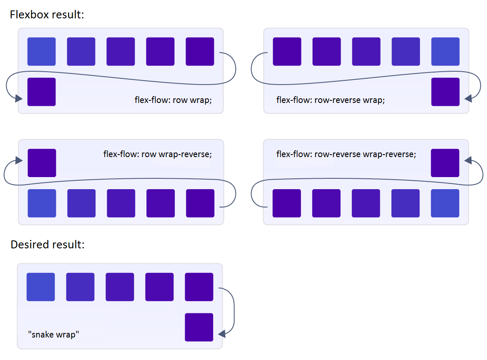
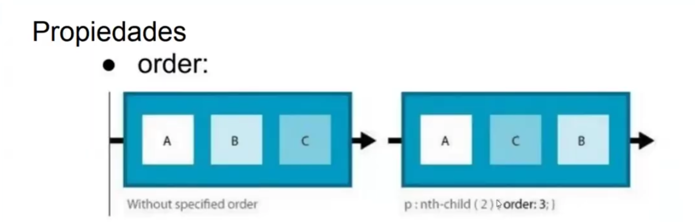
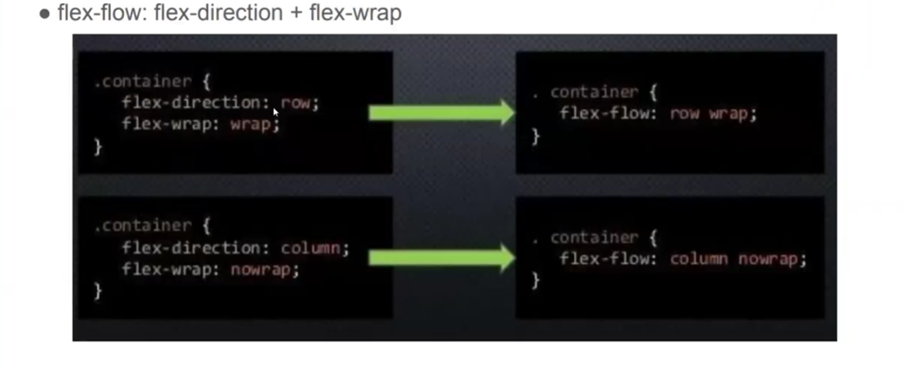
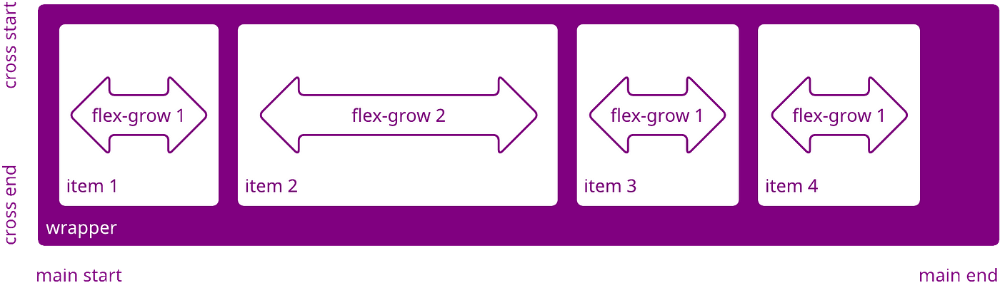
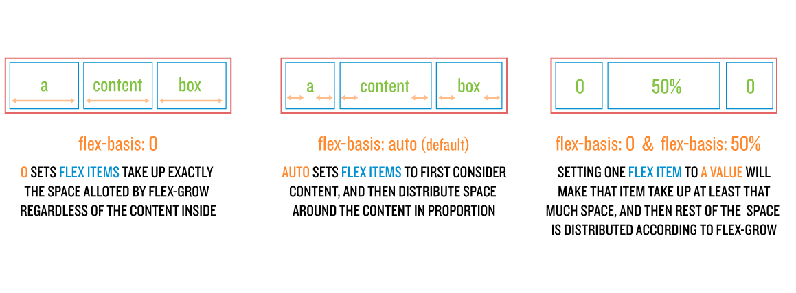

Que es el Flex Direction?
Permite cambiar la dirección de los elementos en el contenedor.
Que es el Flex order?
El Flex order permite aordenar por nosotros mismos en caso de que el orden por defecto este erroneo con una pseudo-clase
Que es el Flex Wrap?
El flex-wrap permite mantener el ancho del los contenedores hijos, es util cuando se tiene que crear varias cards, se acomdan horizontal, pero para que no haya errores dal acmodarse o quesarse sin espacio, conta funcion se crean nuevas filas

Ejemplo de Una manera mas ordernada, se le podria nombrar flex-flow
Flex grow
Se le indica a los elementos hijos cual es el ancho que se debe de tener con respecto a los otros hijos
Flex basis
Se le indica a los elementos cual es el tamaño base que van a tener los elementos hijos
